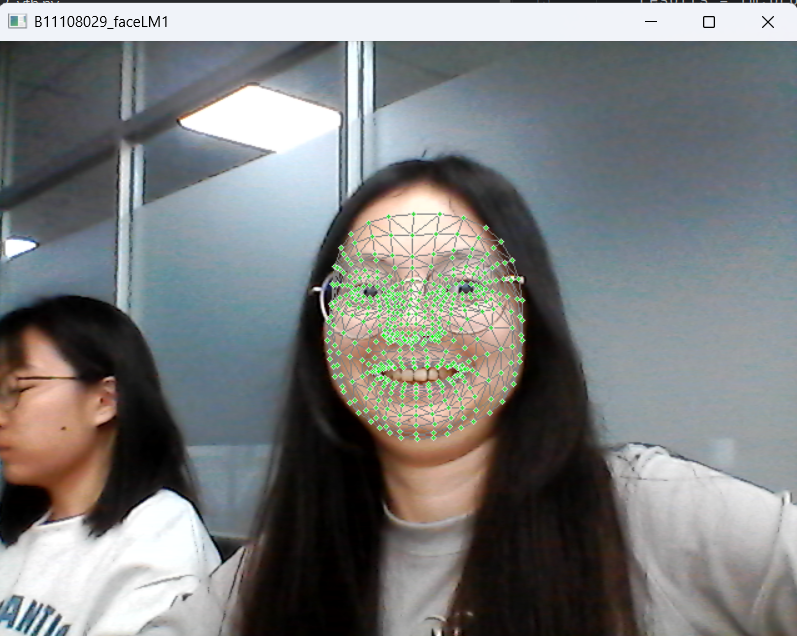
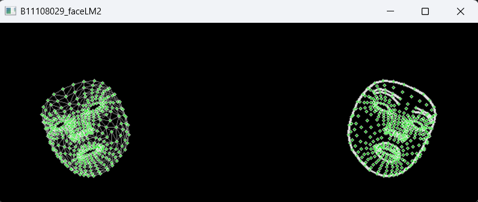
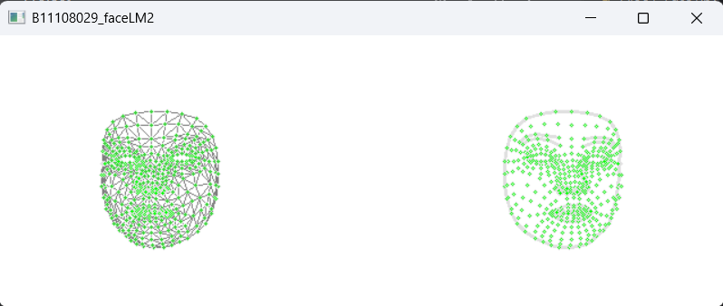
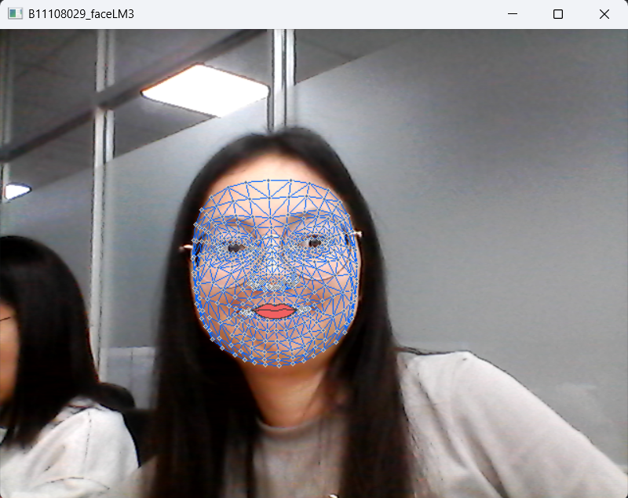
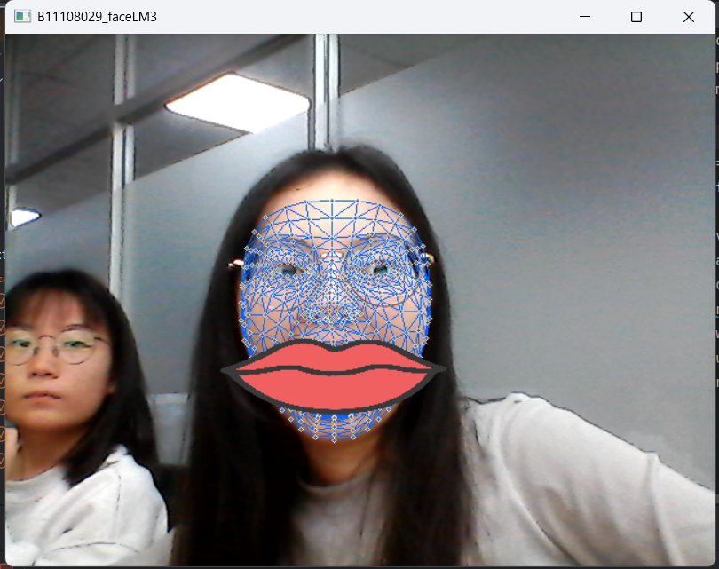

AI06X
FaceMesh 臉部關鍵點應用
用 MediaPipe FaceMesh 做臉部網格、輪廓比較與嘴部貼圖三組應用。
功能簡介
本專案運用 MediaPipe FaceMesh 技術，實作三組臉部特徵應用：（1）臉部網格繪製、（2）Tesselation 與輪廓線條比較、（3）嘴部定位貼圖效果。涵蓋從人臉偵測、關鍵點描繪到互動視覺應用設計，是 VTuber 動畫與 AR 表情技術的入門展示。
成果展示





程式碼片段
AI061｜FaceMesh Tesselation
import cv2
import mediapipe as mp
mpd = mp.solutions.drawing_utils
mpfm = mp.solutions.face_mesh
cap = cv2.VideoCapture(0)
fm = mpfm.FaceMesh(min_detection_confidence=0.5, min_tracking_confidence=0.5)
while cap.isOpened():
success, image = cap.read()
imgrgb = cv2.cvtColor(image, cv2.COLOR_BGR2RGB)
results = fm.process(imgrgb)
if results.multi_face_landmarks:
for f in results.multi_face_landmarks:
mpd.draw_landmarks(image, f, mpfm.FACEMESH_TESSELATION)
cv2.imshow('faceLM1', image)
if cv2.waitKey(5) & 0xFF == 27:
break
cap.release()AI062｜Tesselation vs Contours
import cv2
import mediapipe as mp
import numpy as np
mpd = mp.solutions.drawing_utils
mpfm = mp.solutions.face_mesh
cap = cv2.VideoCapture(0)
fm = mpfm.FaceMesh(min_detection_confidence=0.5, min_tracking_confidence=0.5)
while cap.isOpened():
success, image = cap.read()
h, w = image.shape[:2]
blank = np.full((h, w, 3), 255, np.uint8)
imgrgb = cv2.cvtColor(image, cv2.COLOR_BGR2RGB)
results = fm.process(imgrgb)
if results.multi_face_landmarks:
for f in results.multi_face_landmarks:
mpd.draw_landmarks(blank, f, mpfm.FACEMESH_TESSELATION)
mpd.draw_landmarks(image, f, mpfm.FACEMESH_CONTOURS)
merged = np.hstack((blank, image))
cv2.imshow('faceLM2', merged)
if cv2.waitKey(5) & 0xFF == 27:
break
cap.release()AI063｜嘴巴位置貼圖
import cv2
import mediapipe as mp
mpfm = mp.solutions.face_mesh
cap = cv2.VideoCapture(0)
face_mesh = mpfm.FaceMesh()
mouth_img = cv2.imread('m6.png')
while cap.isOpened():
success, image = cap.read()
h, w = image.shape[:2]
results = face_mesh.process(image)
if results.multi_face_landmarks:
for f in results.multi_face_landmarks:
top = int(f.landmark[0].y * h)
bottom = int(f.landmark[17].y * h)
length = bottom - top
resized = cv2.resize(mouth_img, (length * 3, length))
cx = int(f.landmark[13].x * w - resized.shape[1] / 2)
cy = int(((f.landmark[13].y + f.landmark[14].y) / 2) * h - resized.shape[0] / 2)
image[cy:cy+resized.shape[0], cx:cx+resized.shape[1]] = resized
cv2.imshow('faceLM3', image)
if cv2.waitKey(5) & 0xFF == 27:
break
cap.release()